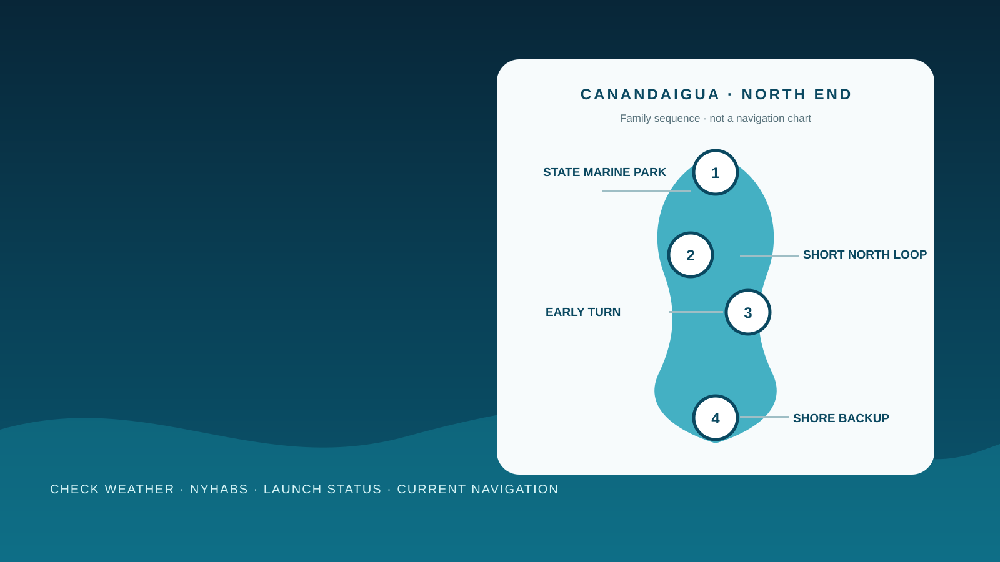

Canandaigua Lake gives a trailer crew something valuable: a state-operated launch at the north end and a city waterfront that can salvage the day if the boat stays on the trailer. It also tempts a family to turn a first visit into a long southbound run. The useful plan does the opposite. Launch early, prove the boat and crew close to the known ramp, treat every dock or swim as a separate verified decision, and return while an easy recovery is still available.
The north-end plan at a glance
The visual below is a timing and logistics sequence: use the state marine park, learn the north end, make one early turn and keep Kershaw Park as the shore backup. It is not a navigation chart; verify current hazards, weather, water quality and launch operations separately.

Use the state marine park as the only assumed launch
New York State Parks lists Canandaigua Lake State Marine Park at 620 South Main Street in Canandaigua. The official page describes it as a boat-launch and fishing-access facility and lists the launch open year-round. For 2026, the page publishes a $7 vehicle fee collected from 4 a.m. to 6 p.m. on weekends and holidays May 9 through June 7, daily June 13 through September 2, and weekends and holidays September 5 through October 12.
Those are fee-collection windows, not a promise that every dock, restroom or staff service is available at every hour. The page does not publish a day-use reservation requirement. Fees, water level, dock position, staffing and construction can change. Check the official park page and call 585-394-9420 when any facility detail controls the day.
Rig in the staging area, not on the ramp. Fit children's life jackets before anyone reaches the dock, assign one adult to passengers and use the launch checklist before entering the lane. Do not improvise trailer parking at the city waterfront.
The route: prove the north end, then decide once
First 30 minutes: clear the launch at the posted speed, establish a proper lookout and make a short operating loop within an easy return. Confirm steering, cooling, bilge condition, battery voltage, passenger comfort and the actual wind on the water. A long tow does not earn the boat a long shakedown.
Next 60 to 90 minutes: choose one modest extension along the north-end shoreline using current navigation information. Stay clear of private docks, marked hazards, swimmers and paddlers. The route is determined by the boat's draft, weather and crew—not by a line in this guide.
Turn early: return before hunger, heat and ramp traffic arrive together. Eat aboard only when the operator can remain undistracted and the boat is legally and safely secured. Otherwise recover the boat and use the waterfront park as the second half of the day.
Skenoh Island is a landmark, not a family beach
DEC's Skenoh Island Wildlife Management Area sits near the northwest corner of the lake and is accessible only by boat. DEC also explains that the tiny island has been reduced by wave action and has received shoreline-protection work. That makes it an interesting landmark, not an invitation to crowd, beach a boat or treat wildlife habitat as a picnic stop.
Observe from a respectful, legally navigable distance while maintaining a lookout and following all posted protections. Do not use the island to teach children that every piece of land on a lake is public recreation space. Private shoreline, wildlife areas and municipal docks each have different access rules.
The DEC page provides launch coordinates and historical context, but it is not a navigation chart. Use current navigation information and local notices. Never cut between the island and shore or follow another boat without proving the route for the actual vessel.
Weather: the north end can look calmer than the return
Use the National Weather Service point forecast for Canandaigua as a baseline, then compare it with conditions at the launch. A land-based forecast does not describe every wave, gust or shoreline effect on a long north-south lake. Wind aligned with the lake can increase the distance over which waves build; that is an inference from the lake's geometry, not a fixed forecast.
Check wind direction, sustained speed, gusts, thunderstorms, temperature and visibility. Cancel when the operator cannot handle the forecast crosswind at the ramp, when thunderstorms could enter the operating window, when cold water makes recovery unacceptable or when visibility is poor. Hearing thunder ends the exposed-water plan; follow current NWS lightning guidance rather than waiting for rain.
Make the first material change the turnaround trigger: a rising headwind, darkening sky, repeated spray, a cold child, a warning alarm or a busier route. Do not spend the wind margin getting farther from the only launch you have verified.
Check NYHABS and look at the water yourself
DEC activated the 2026 New York Harmful Algal Bloom System in May and repeats the rule: know it, avoid it, report it. Review the current NYHABS map before departure and inspect the water at the ramp and every potential contact point. Reports are useful but not complete; a bloom can exist before someone reports it.
Avoid water with scum, streaks, pea-soup appearance, spilled-paint appearance or unusual blue-green or white discoloration. Keep people and pets away regardless of whether a toxin result is posted. Do not power through visible material and then allow children to touch the wet swim platform, tow rope or dog.
Swimming from the boat is optional and demands a legal location, shut-down propulsion, a capable observer, correctly fitted life jackets when appropriate, known reboarding and water conditions that pass visual and official checks. The safest first family plan may skip swimming entirely and use the city's seasonal guarded beach only if it is officially open.
Kershaw Park is the shore backup—not guaranteed boat access
The City of Canandaigua lists Kershaw Park at 155 Lakeshore Drive with nine acres, lakefront walkways, a playground, picnic facilities, bathhouse, small-craft launch areas, public dock and a beach subject to special operating hours. Published park hours are 6 a.m. to 11 p.m. from May 1 through October 30 and 6 a.m. to 9 p.m. the rest of the year.
A public dock listing does not guarantee transient space, depth, trailer access or legal unattended tie-up for the boat. Treat a water arrival as unconfirmed unless the city verifies it for the vessel and date. The reliable backup is to recover at the state launch, park legally and drive or walk to the waterfront.
City park rules prohibit alcohol, tobacco and glass beverage containers. Dogs are allowed in most city parks on leash but not in the Kershaw bathhouse or beach area; Lagoon Park prohibits pets entirely. Pack food and drinks accordingly, and carry out trash where required.
Food, restrooms, fuel and the child-reset plan
Bring drinking water, an early lunch and two simple snacks even if the city waterfront is part of the plan. Restaurant hours and dock access are not safety equipment. Keep a second meal in the tow vehicle so a failed launch does not become a hungry drive home.
Restroom availability at the state marine park is not clearly promised on the current official page. Confirm it by phone. Kershaw publishes a bathhouse tied to its waterfront facilities, but seasonal opening and beach staffing can change. Handle the restroom question before backing down the ramp.
Fuel the boat before arrival and calculate range with the fuel-range guide. Do not count on a marina stop. The child-reset sequence is simple: shade or warm layer, water, food, toilet, then decide. If the answer is still “off the boat,” recover. A successful north-end loop is better than a forced full-lake day.
What to pack and where it goes
New York requires boats and associated equipment to be clean, drained and dry or treated before launching into public water. Inspect the hull, prop, trailer, livewell and bilge before arrival, then repeat after retrieval. Secure every bag so it cannot block life jackets, controls or the path to the dock.
Pets, accessibility, cost and booking
The state park's current pet policy allows a maximum of two pets in day-use areas unless a sign or directive says otherwise. Pets must be supervised, crated or leashed no longer than six feet; proof of rabies inoculation may be requested. Pets are excluded from buildings, boardwalks, playgrounds, pools, spray grounds and guarded beaches, with service-animal exceptions.
The official marine-park page does not describe an accessible boat-transfer system. Call 585-394-9420 and explain the required parking, dock, boarding and restroom support. A paved approach is not proof that a wheelchair user can transfer safely into the actual boat.
Budget the published $7 seasonal vehicle fee, tow fuel, boat fuel and food. The page lists no reservation for ordinary day launching, but special events, commercial operations and facility work may change access. Verify rather than assuming. There are no affiliate or booking links in this destination guide.
Who should go—and who should choose another plan
This plan fits a family with a known trailerable boat, an operator comfortable at a public ramp and enough discipline to make a short north-end trip feel complete. It is especially useful when children value a playground and picnic backup more than a long destination list.
Skip the boating plan when the crew needs guaranteed swimming, guaranteed transient dockage, a known accessible transfer or a full-service marina at the launch. First-time trailer operators should practice with an experienced helper at a forgiving ramp before using a popular Finger Lakes morning as the lesson.
A fuel smell, steering problem, unexplained bilge water, weak battery, repeated fuse opening or engine warning ends the launch. Use the exact manuals and a qualified marine technician. After the trip, log ramp time, wind, route duration, child energy, fuel use and recovery difficulty. That record decides whether the next Canandaigua day should go farther south.
Frequently asked questions
Where should a family launch on Canandaigua Lake?
Canandaigua Lake State Marine Park at 620 South Main Street is the default in this plan because New York State Parks publishes a year-round boat launch and fishing access at the north end. Confirm current operations before towing.
How much is the Canandaigua Lake State Marine Park launch?
The official 2026 page publishes a $7 vehicle fee during listed seasonal collection windows. Fees and collection dates can change, so verify the park page before departure.
Can a family dock at Kershaw Park?
The city lists a public dock, but that does not guarantee transient space, depth, trailer access or legal unattended tie-up. Verify the exact use with the city; the dependable shore backup is to recover at the state launch.
Can dogs visit the Canandaigua waterfront parks?
State day-use areas generally allow up to two supervised pets on a leash no longer than six feet, subject to posted exclusions. City rules allow leashed dogs in most parks but exclude them from Kershaw's bathhouse and beach area and prohibit them in Lagoon Park.
Should a first family trip run the length of Canandaigua Lake?
No. Use a short north-end familiarization, set a time-based turnaround and preserve a simple return to the verified launch. Expand the route only after the crew and boat have a successful local baseline.